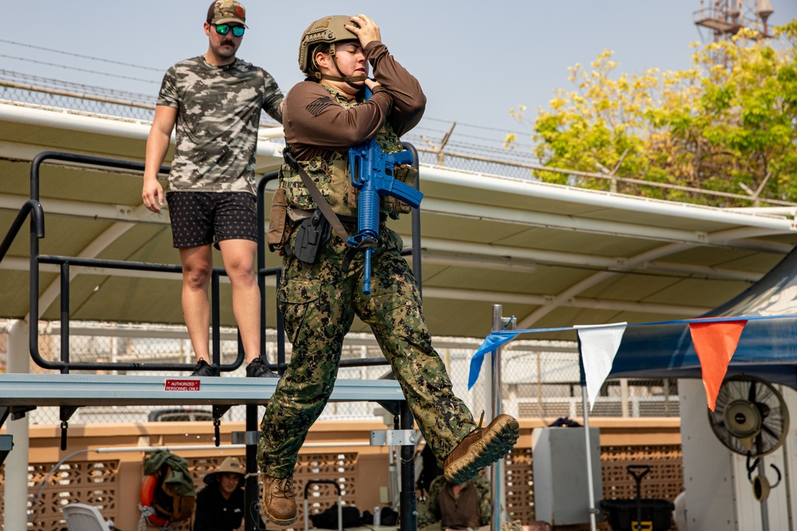

Combat Camera
Documenting kinetic and contingency operations across austere environments — embedded with line units, rotary platforms, and joint task forces.
- Operational Documentation
- Low-Light & Night Ops
- Aerial / Rotary Platforms
- Embedded Coverage
SSG · U.S. Army · Combat Camera
Strategic visual storytelling and integrated marketing communications support for military and public affairs operations — by Julio C. Hernandez.
01 / Selected Work
Frames captured across CONUS training, OCONUS deployments, and coalition operations — a curated selection of mission documentation published through DVIDS.
02 / About

I am Staff Sgt. Julio C. Hernandez, U.S. Army. I enlisted in March 2013 as a Military Police Soldier, beginning my career at Fort Polk (now Fort Johnson), Louisiana, in roles from assistant gunner to senior patrol officer and team leader.
I served in Korea in 2016 as a patrol and radiotelephone operator, then at Fort Bliss, Texas, leading patrol teams. In 2018 I mobilized to the southern border in support of national defense operations — the experience that sharpened my eye for documentation in the field.
In 2020 I realigned with my real passion: visual storytelling. I attended the Mass Communications Foundations Course and the Graphic Design Course at DINFOS, then joined the 55th Signal Company (Combat Camera) at Fort Meade as a squad leader and Visual Information Specialist.
I deployed to Iraq and Syria as Combat Camera Team Lead for CJTF—Operation Inherent Resolve, and most recently served as Combat Camera Team Lead for Navy Central Command (NAVCENT) Public Affairs across joint and multinational operations. Now reclassified as a Public Affairs Specialist, I'm completing my B.S. in Integrated Marketing Communications at West Virginia University.
03 / Capabilities
Every deliverable is shaped by an Integrated Marketing Communications framework — from theater-level intent through final published asset.
Documenting kinetic and contingency operations across austere environments — embedded with line units, rotary platforms, and joint task forces.
Strategic visual storytelling aligned with theater-level themes and messages — shaping narrative for unit, joint, and coalition audiences.
End-to-end campaign craft drawing on graduate-level Integrated Marketing Communications coursework at West Virginia University.
Command portraits, change-of-responsibility coverage, and unit identity work — studio-quality light brought to the field.
04 / Graduate Coursework
Selected assignments from the M.S. in Integrated Marketing Communications at West Virginia University — strategy briefs, brand audits, and campaign decks built across JRL and MDIA coursework.
05 / Featured Project / Off-Duty
Pro Bono · Parent VolunteerOff-duty parent volunteer work documenting school ceremonies, recognition events, and the small daily moments that tell a community's story. Creating smiles — one frame at a time.
06 / Service Record
A timeline of assignments, deployments, and formal training across thirteen years of service.
55th Public Affairs Company (Combat Camera) · Fort Meade, MD
Reclassified into 46S after Visual Information service. Team Lead for CJTF—OIR (Iraq & Syria) and NAVCENT Public Affairs across joint and multinational maritime operations. 483 published assets on DVIDS.
U.S. Naval Forces Central Command · 5th Fleet AOO
Documented PATFORSWA, USCGC Glen Harris operations, VBSS training with Pakistan Navy, and Combined Maritime Forces ceremonies including Egypt assuming command of CTF-154.
Combined Joint Task Force — Operation Inherent Resolve · Iraq & Syria
Led visual documentation alongside Norwegian Telemark Battalion, Task Force Reaper, and partner-force training. Produced unit graphics, joint patrol coverage, and theater messaging assets.
591st Military Police Company · Fort Bliss, TX
Patrol team leader. 2018 mobilization in support of southern border operations.
142nd Military Police Company · Korea
Patrol and radiotelephone operator on the Korean peninsula.
204th Military Police Company · Fort Polk (now Fort Johnson), LA
Enlisted March 2013. Roles from assistant gunner to senior patrol officer and team leader.
West Virginia University · 2023 — Present
American Military University
Hootsuite Academy · Credential ID 221785480
Defense Information School · 2020
07 / Request Support
For unit features, command portraits, training documentation, or coalition coverage — send a brief and I'll respond within 24 hours.